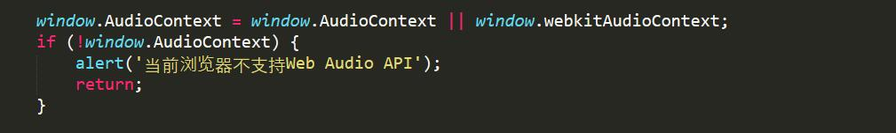
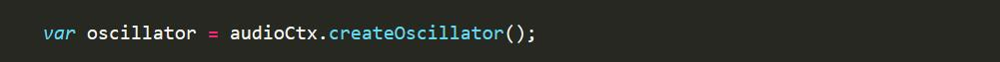
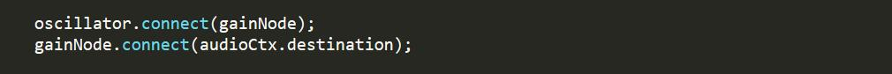
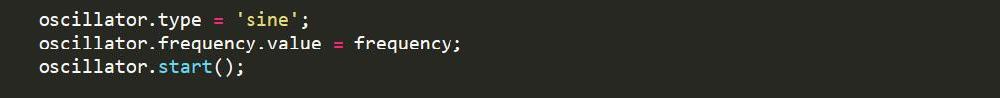
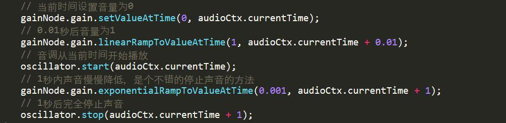

Web Audio API 的简单运用
如果不想用<audio>标签的话，可以试下Web Audio API这个API，
一个简单经典的web Audio的工作流程如下：- 构建音频上下文AudioContext对象；
- 在AudioContext对象内，构建音源，比如<audio>，oscillator，stream
- 构建效果节点effectNode，比如混响，双二阶滤波器，声相，压限器
- 选择最终的音频目的地，比如说你的系统扬声器
- 连接源到效果，效果到输出终端
首先，你需要构建一个AudioContext实例
然后是音频频率
哦对了，在这之前要先判断浏览器是否支持这个API
然后嘛，音调不能少吧
这是控制音频音量的
连接输入输出
现在audio节点图已经建立，我们可以设置属性值及调用音频节点的方法来调节想要的音效，然后就可以播放了
不过底部的实例不是单纯的oscillator.start()，而是以下的处理方式：
- 哆
- 瑞
- 咪
- 发
- 梭
- 拉
- 西